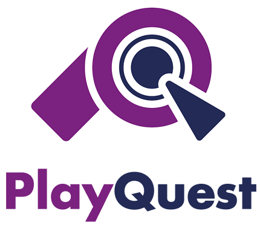

Wat kun je met PlayQuest?
PlayQuest is ontstaan uit één simpele gedachte: Game muziek verdient een eigen podium.
Als gamer merkte ik dat het lastig was om goede soundtracks op één plek te vinden. Sommige muziek staat op YouTube, andere op streamingplatforms, en heel veel tracks zijn nergens makkelijk te beluisteren. Daarom ben ik begonnen met het ontwikkelen van PlayQuest – een app speciaal voor gamers en muziekliefhebbers.
Wat maakt PlayQuest uniek?
- Focus op game soundtrackss
- Curated playlists per genre, mood of game
- Muziek uit zowel AAA-titels als indie games
- Community features (in de toekomst)

Voor wie is PlayQuest?
- Gamers
- Cosplayers & creators
- Studenten die graag focussen met muziek
- Iedereen die houdt van epische soundtracks